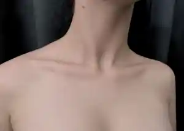
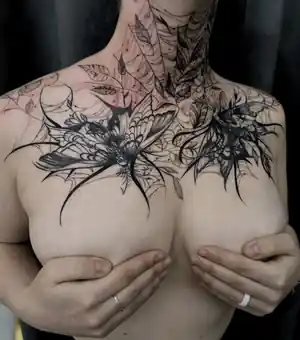
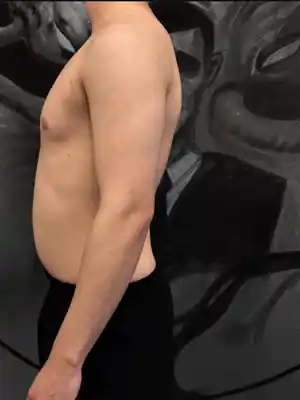
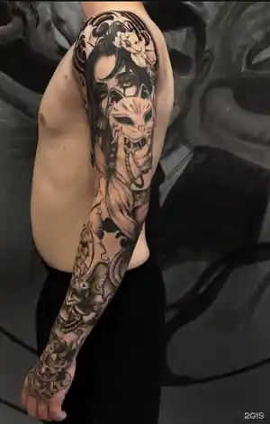
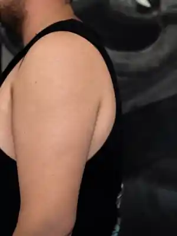
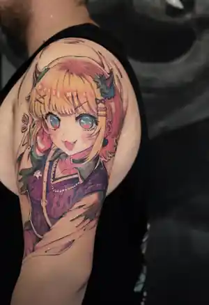
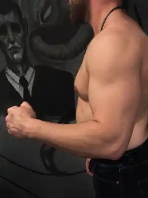
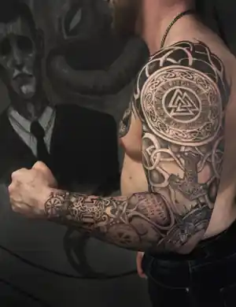

Шея / бабочки
Clean → InkРовно — чистая версия. Наклон — тату проявляется плавно.
Если держать телефон ровно, видно чистую кожу. При наклоне влево или вправо тату плавно проявляется. На компьютере работает hover, на телефоне без датчиков — тап по карточке.
Лучше всего работает на iPhone / Android после разрешения доступа к датчикам. Для iPhone появится системный запрос.







